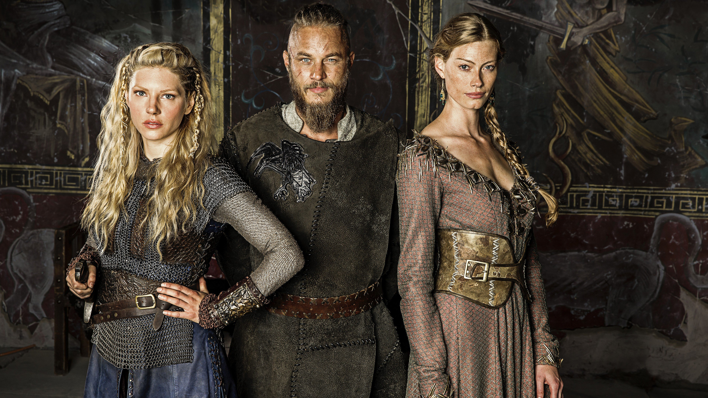

Daughters and Wives

Ragnar Lothbrok had three wives;
Lagertha the Shieldmaiden, Aslaug the warrior queen and
Thora Town-hart (Borgarhjort), a noblewoman who was the daughter of Earl Herrauðr of Götaland.
It should also be noted that some accounts mention a fourth wife.
Ragnar’s wives gave him many sons, the most famous ones being Bjorn Ironside,
Ubba (Ubbe/Hubba/Husto), Hvitserk/ Hvítserkr, Halfdan Ragnarsson/Halvdan Ylving and
Ivar the Boneless (Inwaer/Yngwar).
Eric, Agnar, Hastein, Rognvald, Harald and Fridleiv/Fridleif Ragnarsson (his son from Shieldmaiden Lagertha),
Dunvat Ragnarsen and Radbard Ragnarsen are other names recorded as Ragnar Lothbrok’s sons.
Ragnar had two daughters from Lagertha the Shieldmaiden and several daughters from his
other wives but there is no accurate information regarding their names.
Only two names, Ragnhild Ragnarsdottir and Åløf Ragnarsdóttir appear
in some accounts as the possible names of his daughters.
Ragnar Lothbrok and Lagertha
Although there are not that many resources detailing who Lagertha really was,
there is one that can shed some light into the life of the shieldmaiden: Gesta Danorum (“Deeds of the Danes”).
In Gesta Danorum, it is told that Ragnar met Lagertha when he was taking back Norway from Frø,
the King of Sweden who killed Ragnar’s grandfather, King Siward of Norway during the invasion.
Along with the women in King Siward’s family and others living in his court,
Lagertha was taken prisoner and put in a brothel to be humiliated.
These women fought bravely when Ragnar Lodbrok came to rescue them and take back his grandfather’s lands.
That is where Ragnar met Lagertha. Lagertha is mentioned in Gesta Danorum as “a woman with the courage of a man
who fought fearlessly”.
According to the story, Ragnar was so impressed by Lagertha’s bravery and he wanted to marry her.
But it was not that easy. Ragnar killed a bear and the hound guarding Lagertha’s house to be convinced for marriage.
As an interesting side note here, unlike how it was depicted in History Channel’s Vikings,
Björn Ironside is not featured as Lagertha and Ragnar’s son in most of the historical accounts.
He was Ragnar and Aslaug’s second son after Ivar the Boneless. Yes, Ivar is told to be the oldest one.
Lagertha and Ragnar had a son but he was named Fridleif.
Ragnar Lothbrok and Aslaug
History Channel’s depiction of Aslaug, who was also known as Kraka and Randalin,
is more accurate compared to some other characters in the TV series.
According to Saga of the Völsungs, Aslaug, the third wife of Ragnar Lodbrok,
was the daughter of the legendary Norse hero Sigurd and the shieldmaiden Brynhildr.
When her parents died, her mother’s foster father, Heimer thought it would be dangerous
if anybody knew who Aslaug actually was. He made a big harp and carried Aslaug inside it as he wandered around
posing as a harpist. That went on until one day Ragnar Lothbrok’s men discovered her as she was bathing.
Mesmerized by Aslaug’s beauty, Ragnar’s men forgot about the bread they were baking and they had to tell Ragnar
about her when Ragnar asked what happened.
Ragnar sent his men to bring Aslaug to him. Wanting to see if she was not only beautiful but also smart,
Ragnar put her through some kind of a test. Aslaug managed to impress him and Ragnar asked for her hand in marriage.
At this point Ragnar had no idea that she was the daughter of two legendary Viking heroes.
When Ragnar visited Eysteinn Beli, a viceroy of Sweden, Eysteinn convinced him to marry his daughter
Ingeborg instead of Aslaug. However, birds have already informed Aslaug (who was told to have “powers”)
about Ragnar’s change of heart and that is why she had to tell him the truth about her real identity.
Aslaug told Ragnar Lothbrok that she was the daughter of the shieldmaiden Brynhildr and the
legendary Viking Sigurd who killed Fafnir the dragon (or serpent) according to the myth.
She told Ragnar that she would give him a child with a dragon/serpent in his eye to convince him of her lineage.
She succeeded as that came true when she eventually gave birth to Sigurd Snake-in-the-Eye who was born
with the ouroboros mark in his left eye.
According to the legend, Aslaug also tried to warn Ragnar Lothbrok when he decided to set sail for England
unknowingly for the last time. That was kind of depicted in History Channel’s Vikings as Aslaug saw
visions of Ragnar and Ivar falling into the sea.
On another interesting side note, Aslaug, who was known as some kind of sorceress,
supposedly enchanted Ragnar’s armor and that is why the snakes in King Aella’s pit could not kill Ragnar Lothbrok
until his men removed Ragnar’s armor.